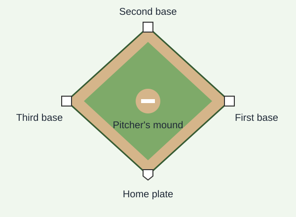

How the game works
Baseball is played between two teams. One team bats while the other team pitches and plays defense. The teams take turns trying to score runs and get the other team's players out.
Scoring a run
A runner scores by safely reaching first base, second base, third base, and then home plate in that order.
Getting outs
A defense can get an out by catching a batted ball before it touches the ground, tagging a runner who is off a base, or recording a strikeout. After three outs, the teams switch roles.
The baseball diamond

The infield
The infield contains the bases and the pitcher's mound. Many defensive plays happen here as fielders try to get the ball to a base before a runner arrives.
What to watch during a game
These details can make the action easier to follow:
- The number of balls and strikes on the batter
- How many outs have been recorded
- Which bases have runners on them
- The score and the current inning
Following the score
A team's run total tells you how many runs it has scored. Comparing both totals shows who is ahead.